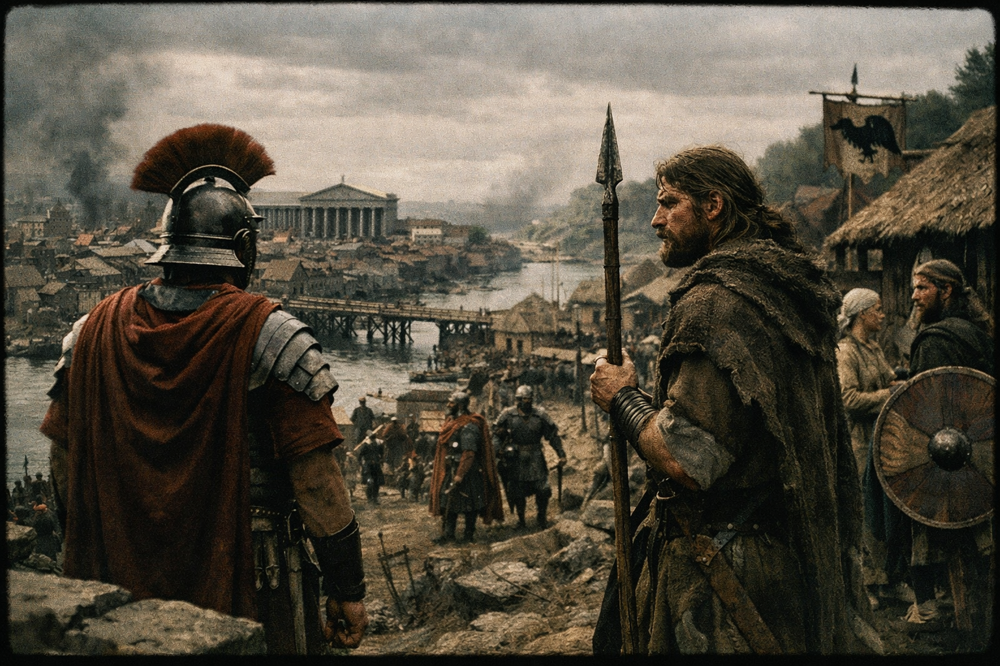
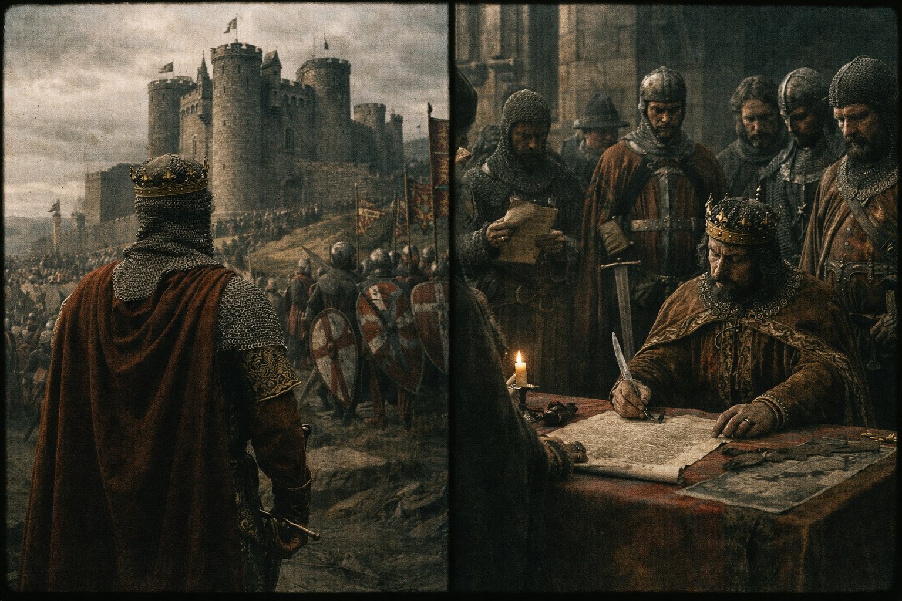
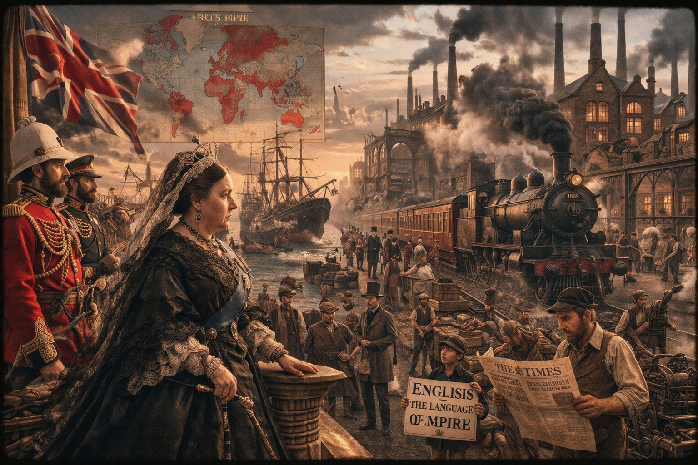
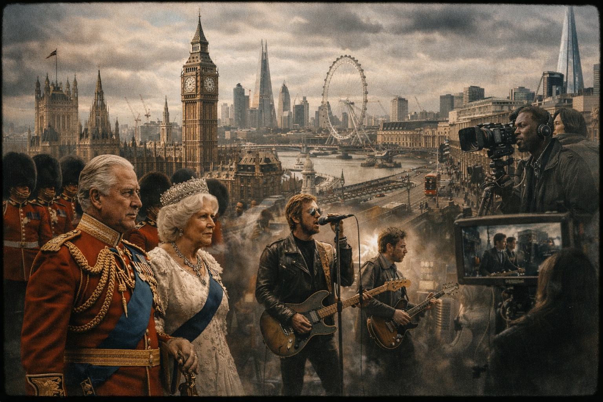

Capingo — це відкритий освітній простір, де зібрано граматику, лексику, підготовку до НМТ та цікавинки зі світу англійської мови. Тут кожен знайде щось для себе — від школяра до ентузіаста.
Навігація
Що тут можна знайти?
П'ять розділів, які охоплюють усе потрібне для вивчення англійської мови
1
ЕНГ Вікі
Повна база граматики, ідіом, фразових дієслів та неправильних дієслів з інтерактивним пошуком
2
НМТ на 200
Поради, матеріали для підготовки, корисні посилання та вчительські секрети успішного складання іспиту
3
Цікавинки
Генератор криголамів для уроків та добірка сайтів для цікавого вивчення англійської мови
4
Про сайт
Хто я, навіщо цей сайт, залишити побажання та приєднатися до Telegram-спільноти
Культурний куточок
Занурся у світ англомовної культури — традиції, історія та цікаві факти
Традиції та звичаї
Англійці славляться своєю любов'ю до традицій. Знамените чаювання "Five o'clock tea" залишається символом британської культури. Не менш відомою традицією є Недільна печеня (Sunday Roast) — класична сімейна вечеря.
Історичні факти
Лондонський метрополітен (The Tube) — найстаріший у світі, відкритий ще у 1863 році. А Лондонський Тауер був фортецею, палацом і навіть зоопарком протягом історії!
Цікавинки Англії
За законом, відстань до будь-якої точки Великої Британії від моря ніколи не перевищує 113 кілометрів (70 миль). Англійська мова має найбагатший словниковий запас серед усіх мов світу!
Свято, що наближається
День Святого Георгія (St. George's Day)
День Святого Георгія, покровителя Англії, відзначається щороку 23 квітня. Святкування має давню історію, що сягає часів Середньовіччя. За легендою, Святий Георгій був римським солдатом, який врятував принцесу та переміг страшного дракона. Сьогодні цей день є символом англійської національної гордості та величезної культурної спадщини.
Традиції
За давньою традицією люди приколюють червону троянду до одягу, вивішують прапор Англії (хрест Святого Георгія), відвідують класичні англійські паби та влаштовують вуличні гуляння з народним танцем Морріс.
Легенда
Цікавий факт: хоча Святий Георгій є покровителем Англії, він ніколи там не був! Його культ поширився завдяки лицарям-хрестоносцям, які привезли легенду про хороброго воїна-захисника на британські острови.
Починай зараз
Готовий до нових знань?
Обери свій шлях — граматика, підготовка до іспиту або просто цікаве вивчення мови
База знань
ENG Wiki
Повна граматика, лексика та довідник неправильних дієслів в одному місці. Обери розділ і занурся у вивчення англійської мови.
Граматичні часи
Граматика англійської мови
Натисни на будь-який час, щоб отримати детальне пояснення, формулу та завантажити вправи у PDF
Present Tenses
Present
Present Simple
Регулярні дії, факти, звички
S + V(s/es) / do/does + V
Present
Present Continuous
Дія прямо зараз або тимчасова
S + am/is/are + V-ing
Present
Present Perfect
Дія з результатом у теперішньому
S + have/has + V3
Present
Present Perfect Continuous
Тривала дія до теперішнього моменту
S + have/has been + V-ing
Past Tenses
Past
Past Simple
Завершена дія в минулому
S + V2 / did + V
Past
Past Continuous
Дія, що тривала в минулому
S + was/were + V-ing
Past
Past Perfect
Дія до іншої минулої дії
S + had + V3
Past
Past Perfect Continuous
Тривала дія до минулого моменту
S + had been + V-ing
Future Tenses
Future
Future Simple
Рішення, прогнози, обіцянки
S + will + V
Future
Future Continuous
Дія, що триватиме в майбутньому
S + will be + V-ing
Future
Future Perfect
Дія завершиться до моменту в майбутньому
S + will have + V3
Future
Be Going To
Плани та очевидні прогнози
S + am/is/are going to + V
Інші теми
Голос
Passive Voice
Пасивний стан у всіх часах
S + to be + V3
Умовне
Conditionals 0–3
Умовні речення чотирьох типів
If + clause, main clause
Мовлення
Reported Speech
Непряма мова та зміна часів
said (that) + backshift
Модальні
Modal Verbs
Can, could, must, should, may...
S + modal + V (bare)
Хронологічна лінія часів
Усі часи на одній лінії
Наведи на час, щоб побачити назву. Натисни для детального пояснення.
МИНУЛЕТЕПЕРІШНЄМАЙБУТНЄ
Лексика
Ідіоми та фразові дієслова
Довідник
Неправильні дієслова
Повна таблиця неправильних дієслів з перекладом. Введи слово в пошук — якщо не знайдено, воно зберігається до списку для вивчення.
Дієслово не знайдено в базі. Збережено до вашого особистого списку для вивчення
Мій список
#
Infinitive (V1)
Past Simple (V2)
Past Participle (V3)
Переклад
ПІДГОТОВКА 2025
НМТ на 200
Твій комплексний путівник до найвищого бала з англійської мови. Тільки актуальна інформація для 2025 року.
200
Твоя мета
~60 хв
На англійську
32
Завдання
B1–B2
Рівень
Структура 2025
Все, що чекає на тебе в тесті
НМТ 2025 з англійської мови — це максимально сконцентрований іспит. У ньому **відсутні** частини «Аудіювання» та «Письмо» (тепер це тільки НМТ, а не ЗНО). Тест складається з **32 завдань**, які ти виконуєш у межах другого 120-хвилинного блоку іспиту. Це означає, що тобі потрібно бути дуже швидким та точним.
Частина Читання (Reading)
16 завдань: встановлення відповідності між заголовками та текстами, вибір однієї правильної відповіді на розуміння деталей та заповнення пропусків у тексті логічними частинами речень.
Частина Використання мови
16 завдань: це перевірка твоїх знань граматики та лексики. Тобі потрібно буде заповнити пропуски в текстах, обираючи правильне слово або граматичну форму з варіантів.
Teacher's Secrets
Секрети підготовки
Стратегії успіху
Як "зламати" систему на 200
🚀 Секрети Matching (Встановлення відповідності)
Головна пастка цього завдання — "слова-гачки". Укладачі тесту спеціально вставляють ідентичні слова з тексту у неправильні варіанти відповідей. **Твоя стратегія:** ніколи не шукай однакові слова. Шукай синоніми та перефразовані ідеї. Якщо у заголовку йдеться про "Finance", у тексті має бути "money", "budget" або "funding".
🧠 Логіка Use of English
Граматична частина часто перевіряє типові теми: Conditionals, Passive Voice, Reported Speech та Gerund/Infinitive. Лексична ж частина фокусується на сталих виразах (Collocations). Наприклад, ти маєш знати, що ми кажемо "make a decision", а не "do a decision". Почни вивчати фразoві дієслова та сталі вирази як єдине ціле.
⏱️ Тайм-менеджмент: Твій прихований ворог
Оскільки англійська йде в блоці з історією України, у тебе є 120 хвилин на обидва предмети. Розумний розподіл — це 60 хвилин на кожен. Якщо ти застряг на одному питанні більше ніж на 2 хвилини — пропускай його! Твоя мета — зібрати всі легкі бали спочатку, а потім повернутися до складних. Кожна правильно заповнена клітинка наближає тебе до 200.
Згідно зі статистикою попередніх років, англійська мова є одним з предметів з найбільшою кількістю найвищих результатів. Але не обманюйся — це тому, що абітурієнти починають готуватися заздалегідь. У 2024 році близько 5% учасників набрали максимальний бал. Стати одним із них — це питання системи, а не таланту.
32
Тестових балів
200
Рейтингових балів
5
Мінімальний поріг
План дій: Твої кроки до результату
1. **Діагностика:** Пройди демонстраційний варіант 2024 року прямо зараз, щоб зрозуміти свій рівень.
2. **Лексика:** Почни фіксувати слова не просто перекладом, а фразами. Використовуй Quizlet.
3. **Граматика:** Не просто вчи правила, а виконуй вправи формату Use of English. Знати назву часу "Present Perfect" менш важливо, ніж розуміти, чому він там стоїть.
4. **Дисципліна:** Приділяй англійській хоча б 15 хвилин щодня. Регулярність — це те, що відрізняє тих, хто отримує 180, від тих, хто забирає 200.
Common Pitfalls
Топ Помилок
Найпоширеніші помилки українських студентів. Натисни на картку, щоб дізнатися правильний варіант та пояснення.
50+
Помилок
Grammar
Аналіз
Vocab
Лексика
2025
Актуально
The Psychology of Error
Чому ми робимо помилки?
Помилки в англійській мові — це не свідчення твоєї "нездатності", а природний процес побудови нових нейронних зв'язків. Найчастіше ми стикаємося з двома явищами: мовним перенесенням (L1 interference), коли ми намагаємося накласти правила української мови на англійську, та надмірного узагальнення (overgeneralization), коли ми застосовуємо правило там, де є виняток. Розуміння причини — це вже 50% успіху у виправленні.
1. "Ukrainian English"
Це коли ми кажемо "How it is called?" замість "What is it called?". Наш мозок просто бере українське "Як це називається?" і перекладає дослівно. Пам’ятай: англійська має свою унікальну логіку побудови запитань.
2. Пастка "I feel myself"
В українській ми "почуваємо себе", але в англійській "feel" уже містить у собі зворотний займенник. Казати "I feel myself good" — це одна з найпопулярніших помилок, яка миттєво видає іноземця.
Interactive Cards
Твій інтерактивний довідник
NMT 2024 Analysis
Статистика "Червоних Зон"
Ми проаналізували результати НМТ за останні два роки. Ось де українські абітурієнти втрачають найбільше балів через неуважність або типові помилки.
65%
Пастка Articles
Використання артикля "the" перед унікальними об’єктами або професіями. Більшість учнів забувають "a/an" при першому згадуванні предмета.
42%
Conditionals
Використання "will" після "if" у First Conditional. Це найбільш стійка помилка, яка тягнеться ще з початкової школи.
38%
False Friends
Неправильний переклад слів, що звучать схоже на українські. "Actual" — це не "актуальний", а "дійсний". БУДЬ ОБЕРЕЖНИМ!
Deep Dive
Лексичні "Підводні Камені" (False Friends)
1. Actual vs. Relevant
Учень на НМТ пише: "This is an actual problem today". Комісія бачить: "Це справжня (існуюча) проблема сьогодні". Щоб сказати "Актуальна проблема" (своєчасна), використовуй Relevant або Current. "Actual" в англійській мові означає "реальний, той, що існує насправді".
2. Magazine vs. Shop/Store
Слово "Magazine" — це паперове видання з картинками (журнал). Місце, де ти купуєш продукти, називається Shop або Store. Також не плутай "Magazine" з військовим терміном — в англійській це також "магазин" для набоїв, але точно не місце для шопінгу.
3. Enthusiast/Amateur vs. Dilettante
В українській мові "дилетант" має негативний відтінок (непрофесіонал). В англійській це слово також існує, але часто використовується для опису людини, яка займається чимось заради задоволення, не заглиблюючись у деталі. Проте для підготовки до іспиту краще використовувати нейтральне Amateur або Novice.
Exam Prep
Чек-лист Самоперевірки (Pro-Tips)
1. Шукай підмети
Кожне англійське речення (крім наказового) МАЄ мати підмет і присудок. Якщо ти бачиш пропущене "It is" — додай його.
2. Перевір часи
Чи узгоджуються часи? Якщо речення почалося в Past Simple, воно зазвичай продовжується в Past часах.
3. Дивись на context
Завжди читай речення ДО і ПІСЛЯ пропуску. Підказка може бути у прийменнику, який стоїть через два слова.
4. Останній погляд
Прочитай свій варіант вголос (про себе). Якщо він звучить незграбно — перевір, чи не намагаєшся ти перекласти українською дослівно.
Пам’ятай: 200 балів — це не відсутність помилок на етапі підготовки, а здатність їх ідентифікувати та виправляти під час іспиту.
Відпочинок з користю
Цікавинки
Генератор криголамів для уроків та добірка найкращих сайтів для вивчення англійської у вільному форматі.
Криголами (Icebreakers)
Запитання для початку уроку
Натисни кнопку, щоб отримати запитання!
Cinema Club
Англійська за фільмами та промовами
Дивись уривки, надихайся та вивчай нову лексику в реальних ситуаціях.
Стів Джобс: Легендарна промова у Стенфорді
Надихаюча історія про успіх, виклики та життєві уроки. Ідеально для практики сприйняття англійської на слух.
A journey through the centuries, from the ancient roots to the modern global influence.

01. Foundations (43 AD – 1066)
Історія Англії починається з римського завоювання у 43 році н.е. під керівництвом імператора Клавдія. Римляни заснували Londinium (сучасний Лондон) і збудували мережу доріг, що збереглася досі. Після їхнього відходу у 410 році, на острів почали мігрувати германські племена — англи, сакси та юти, які принесли коріння сучасної англійської мови.
Наприкінці IX століття, під час запеклих набігів вікінгів, Альфред Великий (878 рік) став єдиним правителем, який зупинив загарбників і почав об’єднувати розрізнені королівства в єдину націю під прапором Уессексу.

02. Middle Ages (1066 – 1603)
1066 рік — переломний момент. Вільгельм Завойовник з Нормандії переміг у битві під Гастінгсом, що назавжди змінило англійську мову, додавши до неї тисячі французьких слів. У 1215 році була підписана Велика хартія вольностей (Magna Carta), яка обмежила владу короля та заклала основи сучасної демократії.
Пізніше Англія пережила Столітню війну з Францією (1337-1453), пандемію Чорної смерті (1348) та Війни Троянд (1455-1487). Епоха закінчилася правлінням Тюдорів: Генріх VIII розірвав зв’язок з Ватиканом у 1534 році, а Єлизавета I розгромила «Непереможну Армаду» у 1588-му, розпочавши «Золотий вік» англійської культури та Шекспіра.

03. Empire & Industry (1603 – 1901)
Стюарти об’єднали корони Англії та Шотландії у 1603-му, але XVII століття було епохою криз: Громадянська війна (1642), страта короля Карла I та правління Кромвеля. Після Великої пожежі в Лондоні (1666) місто було відбудовано з каменю, ставши майбутнім фінансовим центром світу. У 1707 році Акт про Унію юридично закріпив створення Великої Британії.
XVIII-XIX століття стали часом Промислової революції. Винахід парового двигуна перетворив аграрну Англію на «майстерню світу». За правління королеви Вікторії (1837-1901) Британська імперія досягла свого піку, охопивши чверть земної кулі, а англійська мова стала мовою глобальної торгівлі та науки.

04. The Modern Age (1914 – Present)
XX століття принесло випробування двома Світовими війнами (1914–1945), під час яких Англія стала символом стійкості завдяки лідерству Вінстона Черчилля. Після війни у 1948 році було створено Національну службу здоров’я (NHS) та розпочалася хвиля міграції «Windrush», що зробила британську культуру багатонаціональною.
Сьогодні Британія залишається глобальним інноватором. Культурна революція 1960-х (Beatles), розвиток цифрових технологій та статус англійської як основної мови інтернету, бізнесу та авіації підкреслюють незмінний вплив цієї стародавньої культури на сучасний світ.
Про сайт
Про Capingo
Персональний освітній простір для вивчення англійської мови: граматика, підготовка до НМТ та цікавинки.
Хованський Владислав
Вчитель англійської мови
Привіт! Мене звати Хованський Владислав, і я — вчитель англійської мови з щирою любов'ю до своєї справи. Упродовж своєї педагогічної практики я зрозумів одну просту річ: учні вчаться найефективніше тоді, коли матеріал подається цікаво, структуровано та доступно.
Саме тому і народився Capingo — освітній простір, де кожен може знайти корисні матеріали з граматики, підготуватися до НМТ, відкрити для себе нові слова та культурні цікавинки англомовного світу.
2
Роки викладання
98
Учнів
∞
Любові до мови
Місія сайту
Capingo — це не просто сайт. Це відкрите освітнє середовище, де граматика стає зрозумілою, іспит — не страшним, а сама мова — захопливою пригодою. Ми прагнемо зробити якісну освіту доступною для кожного учня — безкоштовно та з душею.
Контакти та побажання
Приєднуйся до нашого Telegram-каналу за корисними матеріалами, або залиш свої ідеї та побажання щодо покращення сайту у спеціальній формі.